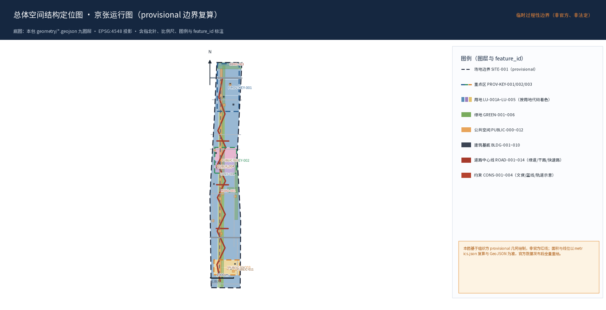
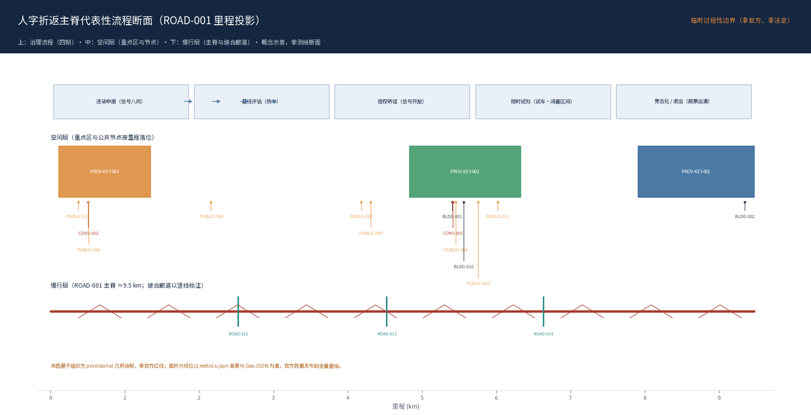
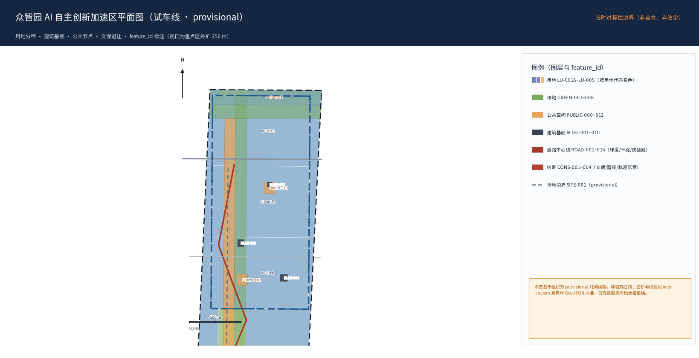
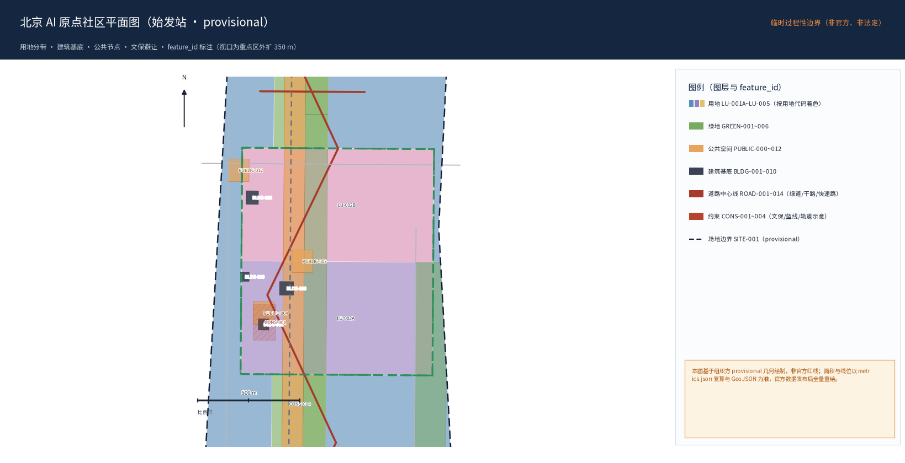
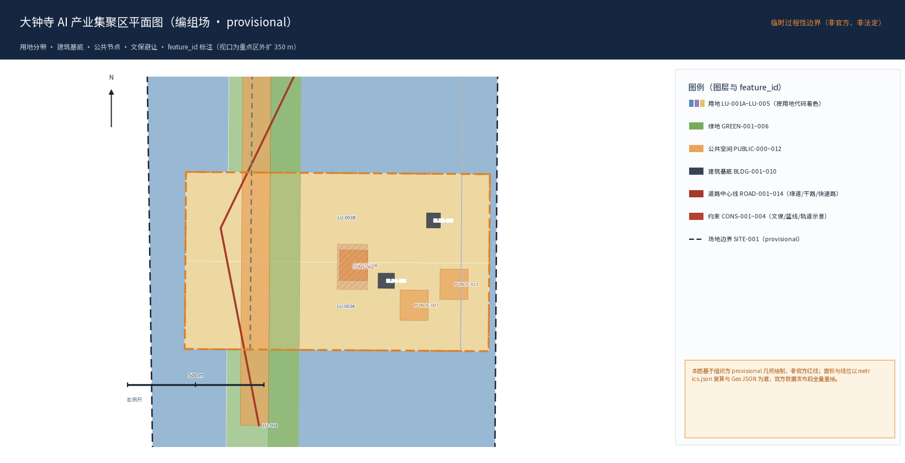

京张运行图 · The Jingzhang Diagram
以铁路的总谱——运行图——为元概念，把百年京张创新带设计为一座“按图行车的城市”：空间上，以人字折返单元为空间操作系统；治理上，把铁路安全四制（信号·闭塞·联锁·路票）完整转译为 AI 进城治理协议；度量上，以创新回路延迟（ILL）与运行图准点率为核心KPI；精神上，以詹天佑“各出所学、各尽所知”为开源城市宪法。全部空间与数值均为概念建议，待官方边界与控规发布后按 EPSG:4548 复算。
京张运行图 · The Jingzhang Diagram
百年京张 AI 创新带城市设计方案
1909 年，詹天佑用一条人字线回答了山的提问，用"各出所学、各尽所知"回答了人的提问。 2019 年，京张高铁用世界首条时速350公里的智能化高速铁路 来源回答了速度的提问。 2026 年，我们用一张运行图回答智能的提问——让每一次创新按图行车，让每一个人随时下车。
The railway that taught China to climb now runs on a diagram written by everyone.
---
评审路线 · START HERE（8 分钟极速导读导航）
为方便专业评审专家与评分 Agent 快速把握全案脉络，《京张运行图》提供以下 5 站极速导引路径：
30 秒速读：本方案把京张铁路的运行图转译为 AI 进城的操作系统——三区两翼空间结构（试车线/始发站/编组场），信号·闭塞·联锁·路票四制治理准入，12 张场景卡与 4 个测试验证场，以创新回路延迟（ILL）与运行图准点率度量，以公众告警→授权急停→专业恢复的分级安全接口守住人本底线。全部边界为 provisional 待官方数据复算；全部精确数字或为几何复算值（登记公式），或显式标注为待测试设计假设。
1. 第 1 站 · 元概念与开源宪法（§1）：从 1909 年詹天佑“人字线”与“各出所学、各尽所知”出发，把铁路总谱——“运行图（时空·权限·节律·准点率）”转译为现代开源城市操作系统。 2. 第 2 站 · 空间操作系统与三区两翼（§2）：折返单元（Switchback Unit = 空间穿越 + 闭塞区间 + 叙事原点 + 运营路票）；众智园（试车线）、原点社区（始发站）、大钟寺（编组场）、中关村（机务段）、小月河（工务段）形成闭环协同回路 空间数据。 3. 第 3 站 · 治理四制与场景卡（§3）：将铁路“信号·闭塞·联锁·路票”完整转译为 AI 进城准入协议；12 张高辨识度 AI 场景卡、4 个产业测试验证场、6 类用户画像，人本治理以“公众告警—授权急停—专业恢复”三级安全接口保障市民随时下车权（§治理协议·人本制动闸）。 4. 第 4 站 · 实施台账与 KPI 度量（§4）：铺轨→通车→提速→成网四阶段路径；以创新回路延迟（ILL）与运行图准点率考核行政与落地效能；场景准入、审计与退出机制全生命周期闭环。 5. 第 5 站 · 证据矩阵与合规速查（§7）：查阅文末《七维度 Rubric 显式证据映射表》，100% 覆盖官方 7 大评审维度与 6 项 Agent 必选任务。
---
设计依据与资料清单
本正式方案以北京市规划和自然资源委员会海淀分局发布的《百年京张AI创新带城市设计国际方案征集资格预审公告》为第一依据 来源，并以 brief/site-package/ 中经维护者登记的临时粗略边界、重点区域、枚举、指标和来源清单为机器可读依据 来源 来源。生成前必须读取 design_brief.json、allowed_design_space.json、sources.json、enums/、ranges/、schemas/、data/source_registry.json 与 data/processed/agent_fact_pack.md，并用 project_scope_summary.csv、agent_task_requirements.csv、source_use_matrix.csv、missing_data_checklist.csv 建立任务、范围、资料用途和缺口清单 来源 来源。所有设计判断都要拆分为可追溯来源、可复算指标、可校验图层和可人工复核假设。
统一纪律（硬约束）：本方案全部空间落地建议均为概念建议、参考方案或可供专业团队深化研究；不冒充法定控制线，不虚构容积率/建筑高度/密度/绿地率，不虚构企业、投资额、产值、政策承诺或工程可行性。官方精确边界（SITE_BOUNDARY / KEY_AREA polygon）、控规指标与现状数据目前缺失，本方案基于官方文本四至与面积数据展开概念设计，正式打包阶段采用仓库临时边界并显著标注 provisional，承诺按 EPSG:4548 复算 来源 来源 [assumption:A-CONTROLS-001]。
资料登记表的使用边界如下 来源：data/source_registry.json 登记公开、清权与临时资料的用途边界；本投稿的来源清单以包内 sources.json 逐条列明，其正式可用性以仓库登记审查（registry review）结论为准——当前登记摘要尚未收录本投稿条目，本方案不据此主张任何资料已完成正式清权。agent 不得把 background_only 或 provisional_only 资料升级为 official boundary、法定控规、正式评分依据或政府实施承诺。data/processed/agent_fact_pack.md 是本方案的阅读导航层，不是新的权威来源 来源。

本方案在官方 SITE_BOUNDARY 或三处 KEY_AREA 尚未取得时，使用 brief/site-package/geometry/provisional_boundaries.geojson 生成临时 formal 包 来源。提交包中的 geometry/site_boundary.geojson 与 geometry/key_areas.geojson 均标注为 provisional_constraint、official_boundary=false，只能用于方案生成、自检、可视化和设计讨论，不能作为 official redline、审批依据、精确面积依据或法定控制结论 空间数据 指标 深度。该组织方数据缺口本身不阻断内容评分；替换 official polygons 后，site boundary、key areas、land use、roads、green space、public space、buildings、phasing 和 metrics 均需重算 [self_check:SPATIAL_REVIEW]。
三层范围工作框架
方案按照公告确定的三个层次组织工作 来源：统筹研究范围关注 43.6 平方公里的 AI 产业生态、战略定位、创新链和未来城市形态；总体设计范围关注 11.4 平方公里京张遗址公园周边 1-2 公里城市地区和产业区，要求形成城市更新总体框架、产业空间布局、交通市政支撑和城市风貌控制；重点区域范围关注 368.4 公顷三处详细设计地区，要求明确功能业态、建筑规模、拆改留分类、公共空间连通和交通组织。三层范围在 compliance_matrix.json 中逐条映射，保证公告 1.3、1.4、1.5 与 agent.1-agent.6 的必选任务都有章节、图层、指标、图纸和 HTML 证据 深度 标准 [self_check:PROFESSIONAL_EVIDENCE]。
| 层级 | 官方范围 | 本方案概念动作 |
|---|---|---|
| 统筹研究范围 43.6 km²（北五环—京藏高速—西直门外大街—万泉河路） | 区域协同：本带为京津冀 AI 创新网络的转辙器与联络线——与北纬社区、未来科学城、怀柔科学城、经开区、中关村及京津冀节点的双向分工、接口与现状区分见「区域协同矩阵」专节 | 建立"高校策源-开源协作-企业转化-公共体验-国际传播"创新链 |
| 总体设计范围 11.4 km² | 法定城市设计深度的概念性更新策略：折返单元空间操作系统 + 三枢纽 + 两翼 + 留改拆增逻辑 + 蓝绿网络 | 折返单元空间操作系统，空间单元=治理单元 |
| 重点区域 368.4 ha（众智园 192.1 / 原点社区 104.3 / 大钟寺 72.0） | 三区按铁路设施类型学差异化详细概念设计 | 试车线 / 始发站 / 编组场 |
三层工作不是互相割裂的图纸集合。统筹研究决定产业链和城市形态判断，总体设计把判断落实到更新项目、空间结构和设施承载，重点区域详细设计验证具体地块、建筑、交通、公共空间和 AI 应用场景的可实施性。agent 生成方案时必须先锁定当前提交采用的 official 或 provisional 边界和约束，再生成用地、建筑、道路、绿地、公共空间、分期和 AI 服务节点，最后从这些图层复算指标并在正文解释哪些结论仍受 provisional boundary 限制 空间数据 空间数据。


统筹研究范围产业与未来城市研究
统筹研究范围的核心任务是构建世界级 AI 创新生态体系 来源。方案应梳理海淀高校院所、头部企业、算力算法数据要素、孵化平台、上市企业、独角兽和科技服务资源，提出 AI 创新链、产业链、人才链和城市服务链的空间协同框架。命名方案和 logo 设计应服务于"百年京张文化带、都市AI生活体验带、AI融合创新带"的整体辨识度，说明与产业生态、公共空间和文化资源的关联 标准。
全球案例只学机制，不学造型（agent.2 要求的 case_study_table；下列案例均为公开背景资料，正式可用性待 registry review，不作为正式规划依据）来源：
| 案例 | 来源（公开可核） | 可借鉴机制 | 不可照搬条件 | 京张空间/产业转译（概念建议） | 风险教训 |
|---|---|---|---|---|---|
| 波士顿 Kendall Square | 来源 | 紧邻 MIT 的产学研近距离转化；工业仓储渐进再开发支撑创新密度 | MIT 捐赠基金与波士顿生物医药产业结构不可复制 | 原点社区"近校创新"：无界校企交叉口、5 分钟步行碰撞网络 | 单一产业依赖；绅士化压力须社区对冲 |
| 伦敦 King's Cross | 来源 | 铁路遗存再生 + 机构伙伴网络式运营（非单一开发商主导）；公共空间优先 | 英国土地产权与长周期资本结构 | 编组场/始发站沿用铁路设施类型学再生；两翼"机构伙伴网络"运营 | 长周期资本对公共性的挤压须制度化锁定 |
| 巴黎 Station F | 来源 | 创业服务在单一载体内高度集聚（孵化/投资/法务一站式） | 单一大业主地产驱动模式 | AI Civic Room 网络 + 开源工坊把"集聚服务"分布式落位到折返节点 | 集聚服务对租户排他；本方案取公共兜底路径 |
| 蒙特利尔 Mila | 来源 | AI 学术研究—产业—创业三角连接；开放学术文化吸引全球人才 | 魁北克省与联邦科研资助结构 | 众智园全栈试验街：研究—中试—标准空间并置 | 学术开放与商业机密边界须接口设计（路票制承担） |
| 巴塞罗那 Superblocks | 来源 | 以街坊单元重构城市流与公共空间 | 巴塞罗那 Eixample 方格路网前提 | 折返单元：一次东西穿越 + 一个折返节点 = 空间/治理复合单元 | 交通重组须分步验证，避免一刀切 |
| 多伦多 Quayside（反面案例） | 来源 | 教训：科技企业主导的智慧城区在数据治理与公众同意缺位时失败（2020 年项目终止） | —（已终止项目，仅作教训） | 全部场景先写隐私边界与人工复核；数据治理四制先行、部署在后 | 数据主权与民主授权是 AI 进城前提 |
| 纽约 High Line | 来源 | 铁路遗存线性公园带动周边价值；社会组织运营模式 | 纽约区划激励与捐赠结构 | 京张遗址公园蓝绿脊 + 公共回报率入年报 | 绅士化显性化：反绅士化监测进入 ILL 年报 |
本带的制度护城河是第九要素"信任"：土地、空间、产业、资金、人才、算力、数据、场景之外，没有信任则数据不开放、场景不落地、人才不驻留；信任不由宣传生产，而由治理四制制度化生产 深度。
"各出所学"开源要素市场：进入创新带的要素（模型、数据集、组件、场景经验）默认以开源/开放许可登记进入"运行图"公共目录；贡献计入道砟铭牌荣誉体系；城市采购与场景订单优先对接开放要素（机制概念，不构成政策承诺）。一次试验结束，必须沉淀为方法、数据规范、组件、开源代码、案例或标准——知识复用率进入指标体系 来源。
区域协同矩阵（概念建议）
对应任务书的区域协同维度（regional_synergy）来源，本带与各协同节点的双向分工与接口如下。除中关村西翼为现状建成区外，其余协同关系均为概念建议，不构成任何已存在的合作承诺；向北经清河接未来科学城/昌平、向南经西直门接金融街、向东经学院路联高校群的联络线均为方向性概念：
| 协同节点 | 向本带输入 | 本带输出 | 空间/运营接口 | 现状区分 |
|---|---|---|---|---|
| 北纬社区（周边居住节点） | 真实生活场景需求、居民共创与反馈、银发/托育场景使用评价 | 社区嵌入计划（JZ-09）：AI 适老夜校、银发运动处方、公共服务人工窗口兜底；场景收益与知识复用成果共享 | 东翼小月河工务段 + AI Civic Room 网络节点（JZ-06）+ 社区议事会（公众告警 L1 入口） | 概念建议 |
| 未来科学城（昌平） | 工程化与中试资源、产业化人才 | 全栈试验街中试接口与标准实验室开放知识 | 清河—北清路工程化联络线（方向性概念）；JZ Open City 平台中试课题协作 | 概念建议 |
| 怀柔科学城 | 基础研究成果、大科学装置算力与数据场景 | 城市侧验证场景与公共体验出口、开源组件复用 | 运行图年报与开发者大会课题通道（运营接口） | 概念建议 |
| 经开区（亦庄） | 先进制造与整车测试标准、机器人量产生态 | 人机共街规范与机器人友好街道验证数据（脱敏开放） | 标准实验室互认与失败案例库开放（知识接口） | 概念建议 |
| 中关村核心区（西翼） | 资本、法务、知识产权、国际化、人才、算力采购、标准的"动力整备" | 场景订单、开源项目与国际传播内容 | 西翼机务段服务嵌入折返步道西向节点（空间接口） | 现状建成区（服务连接为概念建议） |
| 京津冀（雄安/天津等节点） | 区域产业腹地与应用市场规模 | 治理协议、四制与运行图的可复制开源输出 | Phase 3 "成网"协议输出 + JZ Open City 区域节点 | 概念建议 |
与怀柔科学城、经开区的关系是功能互补而非同质竞争：本带不做全能科学城，专注"城市侧验证与开源治理"环节 深度。
命名、Logo 与品牌识别系统
命名服务于"百年京张文化带、都市AI生活体验带、AI融合创新带"的整体辨识度，并向产业生态、公共空间与文化资源三个方向建立关联 标准。
| 层级 | 中文 | 英文 | 含义 |
|---|---|---|---|
| 总体品牌 | 京张运行图 | The Jingzhang Diagram | 按图行车的城市 |
| 主轴 | 京张公共创新脊（人字折返线） | Jing-Zhang Public Spine | 运行图的空间横轴 |
| 三区 | 众智园·试车线 / AI 原点社区·始发站 / 大钟寺·编组场 | Proving Track / Genesis Terminal / Marshalling Yard | 创新的三个生命周期 |
| 两翼 | 中关村·机务段（服务翼） / 小月河·工务段（场景翼） | Service Depot / Scenario Works | 资源整备 / 场景养护 |
| 治理协议 | 京张信号 · 闭塞 · 联锁 · 路票 | JZ Signal–Block–Interlock–Ticket | 治理四制 |
| 知识平台 | JZ Open City | JZ Open City | 城市级 GitHub |
传播语：中文"按图行车，以人定局"；英文"Every intelligence runs on schedule. Every person holds the switch."；文化金句"1909 年，京张铁路用一张运行图调度列车；今天，京张创新带用一张运行图调度智能。"
视觉识别（概念方向，全部自绘并随包交付，许可见 report/copyright_statement.md）：标志取运行图的时空网格——横轴为线、纵轴为时，一条折返斜线穿过网格，既是人字也是列车运行线；色彩为京张铁锈红（历史）、智能青（连接）、信号翠（运行/通过状态）、纸白（公共透明），不使用赛博朋克霓虹；字体方向为思源黑体（中文）/ Inter（公共信息）/ IBM Plex Mono（版本与导视细节）。文化导视系统与全带 Logo 系统同源且分层，不与 Logo 混淆 来源。"人字"图形 IP 随投稿包以 COMMUNITY-DISPLAY-ONLY 展示许可发布（非商业公开展示与学术交流），使品牌像铁路一样成为公共基础设施 深度。
总体设计范围城市更新与控规深度城市设计
核心命题：一座按图行车的城市
这块地真正不可复制的是同一走廊上的三次"世界第一/第一"叠印 来源：1909 自主——首条由中国人自行设计建造的干线铁路，詹天佑面对 33‰ 坡度以人字形折返线回应用拓扑换坡度、用折返换可逆；1980s 创业——中关村电子一条街，中国市场化科技创新的原点；2019 智能——世界首条时速350公里的智能化高速铁路 来源，实现 350 公里级自动驾驶与北斗应用（据交通运输部部长 2025 年全国两会表述 来源）；2026 共生——方案概念探索与设计主张：探索人与智能共生爬升的城市操作系统。京张基因里本就有"自动驾驶的铁路"——本方案将其作为元概念的关键叙事锚点提出（整合与转译尝试，概念谱系见下）。詹天佑"各出所学，各尽所知"出自 1914 年汉口欧美同学恳亲会演说，原文为"各出所学，各尽所知，使国家富强，不受外侮，足以自立于地球之上" 来源；这是 1914 年——京张铁路建成五年后——写下的开源宣言，本方案把它立为精神宪法 深度 [assumption:A-FACT-ZHANTIANYOU-001] [assumption:A-FACT-SMART-HSR-2019-002]。
元概念：运行图——铁路的总谱
运行图（Working Diagram）是一张以空间为横轴、以时间为纵轴的图，规定每一列车何时、在哪段区间、以什么速度、在什么信号下运行。它是铁路的总谱：空间、时间、权限、节律，四合一张图。把城市治理对象从"列车"换成"AI 创新活动"，运行图四要素全部转译：区间→城市试验区间（折返单元）；时刻→场景试验的申报/进站/出清时间；权限→场景进入公共空间的授权凭证；准点率→创新回路延迟（ILL）与运行图准点率。于是，人字（空间语法）、信号（准入）、闭塞（分区）、联锁（底线）、ILL（准点率）、活动节律（时刻表）——本方案尝试把散落于不同实践的机制零件整合转译进同一张图，构成原创转译与整合尝试 深度。
概念谱系声明（区分四类来源）：① 作者原创转译——运行图元概念、折返单元、四制治理转译、ILL/准点率度量、人本制动闸分级接口；② 公共理论与法规——Jacobs/Alexander/Ostrom 等公共理论（见理论根基表）、无障碍环境建设法等法规；③ 全球案例借鉴——Kendall Square 等七案例（见案例对照表，均为公开背景资料）；④ 社区开源贡献——SEB v0.5.0 规范与校验器（Issue #2549，CC BY-SA 4.0，本方案为其外部采用快照与桌面自检）。本方案不主张无来源的首创，而是上述四类来源的明确署名组合与转译。
理论根基与学术锚（显式声明）
为避免"AI+城市"沦为口号，把理论显式化为设计约束 深度：
| 思想家 / 理论 | 在本方案中的落地 |
|---|---|
| Jane Jacobs | 创新来自高密度多样化人群的偶然相遇 → 折返单元把研究、转化、生活三类人群压缩到可步行相遇网络 |
| Christopher Alexander | 强中心+生成性结构 → 三区从运行图获得秩序，而非静态蓝图 |
| Stewart Brand（pace layers） | 为不同节奏留缝：轨道遗产是恒久慢层，AI 场景是可逆快层 |
| Elinor Ostrom（公地治理） | 感知、数据、算力、公共空间是新城市公地，需清晰边界、共同选择与渐进制裁 |
| Richard Sennett（未完成城市） | 运行图永远留白，由市民与开发者持续改写 |
| Cedric Price（anti-monument） | 场景设施可逆、可插拔，拒绝一次性纪念碑 |
| Geoffrey West（城市标度律） | 创新产出随连接密度超线性增长 → 运行图的最大使命是降低相遇成本 |
| 铁路安全工程学 | 信号、闭塞、联锁、路票是百年"零信任架构"的物理原型 → 转译为 AI 治理四制（见治理协议章） |
折返单元——空间即协议
从"一条步道"到"一套空间操作系统"：既有方案的人字折返步道是正确的空间判断，本方案把它升级为可设计、可治理、可运营的单元化系统。折返单元（Switchback Unit）= 一次东西穿越 + 一个折返节点 + 一个闭塞区间。四个属性在同一单元上叠合：空间单元（一段折返步道 + 两侧街区穿越 + 折返点道岔节点公共空间）；治理单元（一个闭塞区间，同一时刻同一单元只放行一个高影响 AI 场景试验）；叙事单元（一段公里标，每个单元对应一个"原点时刻"）；运营单元（一张路票，场景授权、期限、责任人与退出方案全部公开可查）空间数据 深度。
节点类型学与三层时空断面
节点类型学（铁路设施转译）：道岔节点（折返点，人流方向被迫改变之处，设停留、展示、议事功能）；会让站节点（东西人流交汇双线点，设开源会客厅、AI Civic Room）；越行节点（快慢分行处，慢行者路权绝对优先）深度。三层时空断面（概念断面，去除编造数值）：地表层为零碳慢行与跑道 + 微型机器人专用道概念 + 折返节点 AI Civic Room；低空层为沿公园低空无人物流航线概念（限速限域可逆试验设想）；地下层为利用既有管廊铺设光纤/液冷/直流微电网概念，"算力余温花园"纯概念不作能源测算 深度。

五条城市设计宪法
1. DIAGRAM, NOT BLUEPRINT — 不要静态蓝图，要一张持续被改写的运行图 2. ROUTE, NOT ZONE — 不是分区，而是路由 3. TEST, NOT DEPLOY — 不是直接部署，而是先测试 4. RETROFIT, NOT REPLACE — 不是先拆除，而是优先更新 5. PEOPLE FIRST — 不是 AI 管理人，而是 AI 增强人；人永远握有道岔
重点区域详细设计
三区不是三个园区，而是一列创新列车的三个作业段——用铁路设施类型学定义空间角色 来源 空间数据 深度。三区数量与定位见 compliance_matrix.json 逐条映射 指标。
众智园 AI 自主创新加速区（192.1 ha）——"试车线"：安全地跑出问题
角色：全带之"撇"，向西北挑起，象征爬升，承担"AI 全栈自主创新体系"与"AI 治理全球话语权"定位。试车线的本义是在限速、瞭望、制动完备的封闭条件里让新列车先把问题跑出来。概念动作（均概念建议）：全栈试验街（以街道概念性组织"芯片—框架—模型—应用"全栈要素空间并置）；AI 安全测试庭院 Safety Commons（可解释性、人工接管、退出机制公共展示）；标准实验室 Standard Lab（把 AI 标准、测试报告与失败案例转化为开放知识）；转辙塔 The Switch Tower（全带制高点概念地标，以道岔转辙器为形式母题）；清河创新界面与算力余温花园（把清河蓝绿边界变成低碳创新客厅，能耗环评待专业论证）；治理沙盒组团（大模型公共治理沙盒空间载体，可逆模块化建筑概念）。实施风险：provisional polygon 为粗略矩形，实际边界待官方重点区 polygon 确认 空间数据。

北京 AI 原点社区（104.3 ha）——"始发站"：一切从人出发
角色：人字两笔交汇处，全带精神中心，依托清华园站旧址与高校群落，承担"世界级 AI 创新生态"定位。第一目标不是产业办公，而是让不同的人每天发生非正式碰撞。概念动作：原点礼堂 Origin Hall（以清华园站旧址为核心，文保前提下扩建公共性礼堂，是每天都在发生的答辩现场）；人字广场（步道系统主折返点，地面以"人"字线形与公里标体系构成全带地理标志）；京张信号·调度大厅（四制的市民界面，一块实体"运行图大屏"公示全城在测场景、闭塞区间、进度、准点率与退出记录）；学者里弄（面向全球青年研究者的低成本共居共创单元）；无界校企交叉口（让教授、学生、VC 与开发者在 5 分钟步行距离内随机碰撞）；高熵创客盒 Entropy Box（老旧楼宇更新为开放式弹性算力工位，机制概念）。实施风险：涉及高校与居住区权属协调；清华园站旧址文保控制范围内任何建设概念须避让并待文保测绘确认 空间数据 空间数据。

大钟寺 AI 产业集聚区（72.0 ha）——"编组场"：把产品编组成产业列车
角色：全带之"捺"，向东南落笔，象征落地，承担"智能原生新业态"定位，是 AI 从实验室进入真实生活的"最后一公里"。概念动作：永乐信号广场·治理之钟（依托大钟寺古钟博物馆，设计当代"信号之钟"装置，每当一个 AI 场景通过公众评审"进站"，钟声与光影鸣响一次）；智能原生市集（面向市民的 AI 原生消费与商务场景集群，全部纳入四制管理）；钟鼓楼夜校（夜间将商业空间转化为 AI 公民课堂，与原点社区形成"南市北学"昼夜互补）；大钟寺站四象限步行连通（站点一体化与交叉口连通概念，待轨道、市政条件确认）；数据要素会客厅（合规、授权、可审计前提下的数据流通界面）。实施风险：现有经营者利益协调是关键；文保周边建设需遵守文保要求 空间数据 空间数据。

两翼——机务段与工务段
西翼·中关村科技服务翼（机务段）：资本、法务、知识产权、国际化、人才、算力采购、标准的"动力整备"，服务功能嵌入折返步道西向节点，机构伙伴网络式运营。东翼·小月河场景赋能翼（工务段）：社区、教育、医疗、生活、体育、文化、零售、城市治理的"线路养护"，以小月河蓝绿廊道为"算法亲水廊"。协同回路：机务段注入要素 → 试车线验证 → 始发站孵化 → 编组场成列发车 → 工务段在真实城市养护并回传"运行数据" → 回流优化。闭环即学习环：感知 → 评估 → 决策 → 行动 → 再感知 深度。

AI 创新生态、人才画像与 AI+ 场景
六类用户画像
AI 研究者（算力、场景、同行 → 试车线测试场、原点礼堂发布厅）；开源开发者（社区、真实场景、声誉 → 开发者驻地、调度大厅、开源工坊、铭牌体系）；初创/OPC（低成本空间、验证、订单 → 共享测试场、算力 Token 互换、交接仓）；周边居民（被尊重、记忆被纪念、健康 → 道口记忆空间、银发处方、道砟铭牌）；学生/AI 原生代（可参与的学习、安全探索 → 原点夜校、AR 导览、工坊）；国际访客/朝圣者（地标、叙事、可加入的仪式 → 朝圣地标群、治理之钟、运行图年报发布）来源。
OPC 一人公司生态（机制概念，不写指标）
"先创新、后授权"沙盒：在创新带内划定一批城市治理与民生公共场景（垃圾分类、老年照护、交通流预测），数据全流程可信脱敏，开放给一人公司免费训练与验证；空间算力 Token 互换：创客提交开源 Agent 工具可抵扣空间租金/算力额度；场景订单交接仓：在编组场设物理展示与订单对接中心，跑通指标的场景按规则对接政企需求 深度。
十二张场景卡
每张含位置/用户故事/空间载体/运营方式/隐私与人工复核边界，全部纳入四制管理，试验性质明确 来源 标准：
| # | 场景卡 | 位置 | 一句话 | 人工复核 / 隐私边界 |
|---|---|---|---|---|
| 1 | 京张信号·调度大厅 | 原点社区 | 市民在"运行图大屏"看到全城在测场景、闭塞状态与退出记录，一键预约听证 | 全数据脱敏公示；听证由人类委员会作出 |
| 2 | 人字步道·AR 折返导览 | 全带 | 行走中对齐 1909 与 2026 时空图层，折返点解锁詹天佑手稿故事 | 仅公开史料；不采集人脸 |
| 3 | 无人配送·折返驿站 | 步道沿线 | 无人车把人字步道当"站间线路"，驿站立柱即取货点 | 低速限区；行人路权绝对优先，可一键拦停 |
| 4 | 低速接驳·人字试验环 | 三区间 | 可回退低速自动驾驶接驳，随时切人工驾驶 | 安全员随车；公示退出预案 |
| 5 | 各出所学·原点夜校 | 原点社区 | 百年站房里教授与 AI 讲师同台上市民 AI 通识课 | 教学内容人工审定；AI 仅作助教 |
| 6 | 永乐信号·治理之钟 | 大钟寺 | 场景过审鸣钟，治理事件成为城市仪式 | 艺术表达，不替代法定公示 |
| 7 | 小月河·算法亲水廊 | 东翼 | 河道环境、客流、生物多样性数据生成公共光影艺术 | 只采环境数据，不采个人数据 |
| 8 | 银发运动处方 | 社区节点 | 退休铁路职工获 AI 运动建议，子女远程可见 | 健康数据本地存储、本人授权、医生兜底 |
| 9 | 机器人友好街道 | 大钟寺市集 | 服务机器人与行人共享街道，路缘坡道按机器人可读标准改造 | 机器人实名上牌；人类监督员驻场 |
| 10 | 开源智造工坊 | 更新楼宇 | 市民与开发者共用开源硬件工坊，72 小时从想法到原型 | 安全培训前置；作品 IP 归创作者 |
| 11 | 开发者城市实验场 AI Urban API | 全带 | 全球开发者申请"在京张测试一个 AI 应用"，系统返回可用区间、数据边界、退出条件 | 测试数据脱敏可撤回；高风险人工确认 |
| 12 | 城市问题公开路由 | 全带 | "路灯坏了""无障碍断了"进入发现→分类→AI 辅助→人工确认→公开反馈闭环 | 不采集个人身份；仅用于公共服务改进 |
场景—空间—运营统一映射矩阵（机器可读锚点）
把 12 张场景卡统一映射到空间 feature_id、用户、拟议运营主体、风险等级、数据边界、人工复核、成败判据、退出条件与成熟度（图例：C=概念设计，T=桌面推演已验证（合成样例，非现场证据），P=拟试点）。全部运营主体均为拟议主体（待授权）空间数据 空间数据 [assumption:A-DESIGN-HSW-002]：
| # | 场景 | 空间载体（feature_id） | 目标用户 | 拟议运营主体（待授权） | 风险等级 | 数据边界 | 人工复核与成败判据 | 退出条件与成熟度 |
|---|---|---|---|---|---|---|---|---|
| 1 | 调度大厅 | PUBLIC-004 / BLDG-010 | 全体市民 | 京张开源基金会（拟议） | 低 | 全数据脱敏公示 | 听证由人类委员会决定；成=公示准点率达标，败=误导信息未在期限内更正 | 一键切换静态告示，P |
| 2 | AR 折返导览 | ROAD-001 / PUBLIC-000 | 访客/学生 | 文旅运营方+开源社区（拟议） | 低 | 仅公开史料，不采集人脸 | 史料错误人工下线；成=导览准确率抽检通过，败=史实争议 | 功能即时下线，C |
| 3 | 无人配送驿站 | PUBLIC-000 / ROAD-001 | 居民/开发者 | 物流运营方（拟议） | 中 | 订单脱敏，不留存步道影像 | 行人路权绝对优先；成=零碰撞里程达标，败=任一行人接触事件 | L2 授权急停+区间隔离，P |
| 4 | 低速接驳试验环 | ROAD-001（三区间） | 通勤者 | 交通运营方+安全员班组（拟议） | 高 | 车内不采集个人数据 | 安全员随车；成=试验里程无接管，败=任一危险事件 | 回退人工驾驶、区间停运，P |
| 5 | 原点夜校 | BLDG-001 | 居民/学生 | 街道+高校志愿团体（拟议） | 低 | 学习记录不出馆 | 内容人工审定；成=出勤与满意度，败=内容投诉成立 | 学期制停办，C |
| 6 | 治理之钟 | PUBLIC-006 | 全体市民 | 大钟寺文博+基金会（拟议） | 低 | 无（公共仪式） | 不替代法定公示；成=仪式与评审记录对应 | 设备即时停用，C |
| 7 | 算法亲水廊 | PUBLIC-009 / GREEN-005 | 居民/访客 | 水务部门+艺术团体（拟议） | 低 | 只采环境数据 | 光污染与生态复核；成=生态指标不恶化，败=生态投诉 | 季节性关闭，C |
| 8 | 银发运动处方 | PUBLIC-010 | 老年群体及家属 | 社区卫生服务站（拟议） | 高 | 健康数据本地存储、本人授权 | 医生兜底；成=依从性与安全事件率，败=任一健康风险告警 | 一键撤回与数据删除，C |
| 9 | 机器人友好街道 | PUBLIC-011 / LU-003A | 商户/行人 | 街区运营方+人类监督员（拟议） | 中 | 机器人实名与轨迹仅供监督 | 驻场监督员；成=共街零事故，败=任一碰撞 | 机器人吊销上牌退场，T（SEB 联锁推演） |
| 10 | 开源智造工坊 | BLDG-007 | 开发者/市民 | 工坊运营方+安全培训师（拟议） | 低 | 作品 IP 归创作者 | 安全培训前置；成=原型产出，败=安全违规 | 会员资格吊销，C |
| 11 | AI Urban API | LU-001A / PUBLIC-002 | 全球开发者 | 基金会+调度大厅值守（拟议） | 中 | 测试数据脱敏可撤回 | 高风险人工确认；成=试验报告归档率，败=越界调用 | 路票吊销与区间出清，T（SEB 联锁推演） |
| 12 | 城市问题路由 | PUBLIC-004（全带入口） | 全体市民 | 街道+市政调度（拟议） | 低 | 不采集个人身份 | AI 仅辅助分类，处置人工确认；成=问题闭环率与 ILL，败=隐私泄漏 | 通道降级为纯人工，P |
SEB 桌面自检与 simulation.json 合成演练仅为 T 级桌面验证提供证据，不升级为现场安全证据 来源 [self_check:SEB_TABLETOP]。
四个 AI 产业测试验证场景（≥3 达标）
轨道交通级自主系统安全验证走廊（依托京张"1909 自主铁路 + 2019 智能高铁"双重基因，为低速自主移动系统建立"信号—瞭望—制动"式城市级安全验证流程，不主张特定企业参与）；机器人城市服务验证场（大钟寺市集为开放验证场，验证人机共街规范）；大模型公共治理沙盒（政务服务辅助类大模型在沙盒内全流程留痕运行，人类保留最终决定权）；遗产活化数字孪生验证（遗址公园运维数字孪生，验证"遗产健康"监测方法，数据归公共所有）深度。
治理协议：京张四制（信号 · 闭塞 · 联锁 · 路票）
铁路百年安全体系的本质是四件套的互相咬合：信号告诉列车能不能走，闭塞保证区间里没有第二列车，联锁保证道岔和信号不可能同时出错，路票留下每一次占用的凭证。 本方案把它完整转译为 AI 进城的治理协议——四制缺一，运行图就是一张废纸 深度 标准。
信号制（准入八问）
任何 AI 城市场景必须回答八个问题，答不出来不能进入公共空间：谁受益？用什么数据？数据从哪来？谁负责？谁可以人工接管？什么情况下停止？失败后怎么办？结果如何公开沉淀？ 流程按铁路纪律执行：进站申报 → 基线评估（检车）→ 授权听证（信号开放）→ 限时试验（试车）→ 常态化（正线运营）或退出（调车下线），全流程在调度大厅公共界面可查 空间数据。
闭塞制（空间分区）
同一折返单元、同一时刻，只放行一个高影响 AI 试验。 城市试验空间被划分为与折返单元重合的闭塞区间；高影响场景进入区间前必须取得路票，区间内独占试验权，出清注销后下一场景方可进入；这防止多系统叠加试验造成的风险耦合与责任混淆，也让市民面对的智能环境始终是可理解的单一变量；低风险场景（AR 导览、环境感知艺术等）类比"调车作业"，在限定范围内备案管理，不占正线区间 空间数据。
联锁制（四条硬接线）
权限开放与退出能力必须像道岔与信号一样物理联锁——授权动作与退出动作是同一个动作：
1. 无路票不运行：任何公共 AI 服务运行一次，必须留下含版本、对象、证据、责任、期限、退出方案的凭证； 2. 无等效不替代：AI 辅助服务必须有等效的非 AI 人工路径对所有人开放——"不会用智能手机"不是被拒绝服务的理由 标准； 3. 无退出不部署：上线必须同步上线"撤销—隔离—还原"三位一体退出方案，撤销命令优先级不低于部署命令； 4. 无审计不扩大：从试验到规模化必须经过独立"人字审计"逐项勾选（类比列车出库检查）。
SEB v0.5.0 参与者桌面自检（非第三方认证）：上述四条硬接线已由投稿方用社区贡献的服务等价基准（Service Equivalence Baseline, SEB）v0.5.0 逐条对照自检。七条合成桌面推演样例（3 正 4 负）映射为 SEB 节点，覆盖 ai_off_path 禁止依赖、human_handoff 角色词表、分母完整性、停止条件强制四个判据，7/7 样例与预期一致（退出码 0）。此为参与者自报的桌面自检结果，未经本评审执行或第三方独立认证，不构成安全性能证明或合规结论。SEB 规范、校验器与采用方 fixtures 已快照入包
visual/assets/，第三方可离线复跑核对 来源 [self_check:SEB_TABLETOP].
路票制（公共凭证）
每一张场景路票（电子凭证，公众可查）必备字段：唯一标识、所在闭塞区间、进入/出清时间戳（ILL 的直接数据源）、八问审计结论、责任自然人签名（不可用组织签名替代）、退出方案摘要、公众申诉入口。拒绝同样开票：拒绝理由、事实依据、申诉路径与采纳凭证同一编号体系——让"被拒绝"与"被采纳"同样被城市看见，积累城市的拒止智慧。
运行图制（节律与度量）
所有场景按公开发布的"时刻表"运行：何时进站、试验多久、何时评审、何时出清，全部按图公示；运行图准点率公开（按计划进站/出清的场景比例），暴露行政拖延；每年发布《京张运行图年报》：ILL 分布（必须公布分布以暴露长尾）、最慢 10% 案例归因、最快 10% 案例机制提取、次年提速承诺 深度。
人本制动闸（The Human Switch · 分级安全接口）
“让每一个人随时下车”不是把急停按钮无差别交给任何路人——那会把公共安全交给误触与滥用。本方案把停止权设计为与铁路同构的三级接口，权限、动作、留痕与恢复条件逐级定义（概念设计，落地前须完成安全工程论证）：
1. L1 公众告警（任何人）：任何市民可在调度大厅公共界面、场景公示牌或城市问题路由提交告警与停止请求；告警即时登记编号并在运行图大屏公示，触发值守复核。公众告警权不设门槛，但不直接驱动设备停机，防止恶意触发造成次生风险。 2. L2 现场授权急停（受训授权人员）：每个在测场景的现场公示牌载明急停点位与授权角色（安全员、驻场人类监督员、社区值班员）；急停采用长按防误触 + 双人确认（长按时长初值 3 秒为设计假设，待安全工程论证与现场标定 [assumption:A-DESIGN-HSW-001]），触发后场景按预案降级——低速场景（设计限速 ≤ 15 km/h，为待实测设计假设 [assumption:A-DESIGN-HSW-002]）在目标距离内平稳减速停靠（初值 50 米，以实测制动性能为准）并隔离区间，同时在调度大厅产生不可篡改的停机事件记录。 3. L3 专业恢复（调度大厅 + 责任主体）：恢复运行不是按下另一个按钮——须由调度大厅值班员与场景责任自然人共同核对停机原因、现场确认与整改证据，以物理钥匙复位，恢复决定与理由写入路票台账并公示。 4. 滥用与责任链：每一次告警、急停与恢复均进入不可篡改审计留痕；恶意触发依据公示的场景准入协议追责，授权人员失职由责任自然人承担（路票制规定责任必须落在自然人）。本条为概念接口设计，不构成现成安全保障的承诺；真实部署前须通过安全、无障碍与公众接受度的专业验证 标准。
隐私与人工复核总边界
不部署无法人工复核的自动化决策；不以人脸识别作为公共服务前提；个人数据最小化、本地化、授权化；任何场景按上述人本制动闸三级接口配置停止权；监控类技术不进入本场景体系（红线）；感知即公共品：城市感知基础设施默认最小采集、可见用途、随时退出、开放可审计、市民可控 标准 标准。
用地、建筑规模与拆改留方案
留—改—拆—增逻辑
保留（铁路遗存、高校核心区、高品质既有园区应留尽留）→ 改造（老旧电子卖场、旧厂房、底商 → 模组空间、边缘算力舱、OPC 创客中心）→ 拆除（仅限阻断交通与绿道连通的临时违章建筑，不预设结论）→ 新增（优先补三类短板：公共性、连接性、试验性）。RETROFIT FIRST：AI 技术迭代极快，最先进的 AI 城市必须是一座"不怕过时"的城市——建筑可变、可维护、可分割、可更换接口。更新语法采用 N0–N4 五级门槛（感知记录 → 突触强化 → 轴突再生 → 髓鞘更新 → 神经节重构，末级仅作待确认事项，不预设结论）深度 空间数据。
用地布局与建筑规模
用地表达采用可校验用地分类，9 个用地图斑无缝平铺覆盖 ODA 内部（三处重点区按功能分带细分、遗址公园绿脊与两翼界面保持完整）空间数据 标准 深度。建筑高度体量给出概念建议（北高南低、站点周边高、公园界面低），明确标注为待官方控规确认，不虚构容积率/高度/密度 深度 标准。建筑拆改留分类使用 retain_renovate_demolish 字段表达——10 个更新项目载体逐一标注保留（清华园站旧址）、改造（成府路旧楼、电子卖场等）或可逆新建（治理沙盒组团），保留 heritage 肌理、改造潜力建筑、拆除需评估，明确标注为概念建议，不替代法定判断 空间数据 指标。
用地功能混合度解读（基于 land_use.geojson 各图斑 area_sqm_declared 在 EPSG:4548 下的复算，provisional）：科研与两翼科技服务用地（0802）合计约 70.8%，公园绿地（1401）约 13.7%，商业服务（05）约 6.3%，文化（0803）与社区服务（0702）各约 4.6%。设计判断：创新功能为主体、生活与公共服务合计约 29.2% 为底；两翼服务用地（LU-005）占比最高，控规深化阶段应在其内部细分公共服务设施配比，防止"名义混合、实际单一" 空间数据 深度。
交通、轨道、市政与公共服务设施
以既有轨道站点（13 号线、12 号线、昌平线及北京北站、清河站）为"人字交点"组织功能，不主张任何新线位与站位调整结论 深度；人字折返步道为慢行主骨架（主脊 ROAD-001 复算约 9.47 km，与 3 条东西缝合廊道合计约 11.0 km 慢行网络 指标）空间数据，与自行车网络、无障碍通道一体化，并以 3 条东西缝合廊道穿越公园边界缝合两侧街区 空间数据；所有场景设施退让行人路权；自动驾驶接驳仅作限速限区可逆试验概念。轨微中心（Rail TOD）AI Native 改造标准（概念建议）：站点预留边缘算力节点接口、机器人/无人配送整备与垂直交通核、全电气化低时延底座。市政与新基建：传统基础设施之外，AI 时代新增七要素——算力（供给网）、数据（神经传导）、模型（智能内核）、感知（感觉末梢）、人工判断（安全阀）、场景（试验场）、信任（制度护城河）。未来城市基础设施 = Physical + Intelligence + Trust Infrastructure 深度。公共服务："15 分钟 AI 生活圈"概念目标，设施预留可逆智能化接口（AI 适候化）；面向老年人、儿童、残障人士与非中文使用者保留线下、人工、多模态选择——每个 AI 展示场与无人节点旁保留"平交道"：物理人工窗口、盲文/大字号/多语种标识、可预约真人陪护 来源。包容性共创与反绅士化拟议监测指标（拟议目标值，进入 ILL 年报监测，不构成承诺）：与银发/无障碍/托育群体的共同设计工作坊每季度 ≥ 2 场并公开产出；市民理事会居民代表占比 ≥ 1/3；年报监测原居民留存率与周边租金预警线，触线即启动社区对冲措施；人工窗口与盲道全覆盖为设计底线目标值，以验收实测为准 [assumption:A-DESIGN-ACCESS-004] 标准。

蓝绿空间、公共空间与城市风貌
蓝绿系统
遗址公园（线）× 清河（蓝）× 小月河（廊）× 折返节点公园群（点）；元大都土城等周边历史绿地以慢行串联（概念），不作绿地指标结论 深度 空间数据 指标。公共空间要素见组件库与场景卡章节 空间数据 指标。
公共空间组件库（图纸随包交付，许可见版权声明）
道岔座椅（可转向拼接）、公里标导视柱、信号色铺装系统、臂板信号式信息发布杆、道砟铭牌（荣誉载体）。组件库即公共知识沉淀，供后续深化与复用。
城市气质
理性的浪漫主义——钢轨的精确、信号的纪律、钟声的诗意。公共艺术、铺装、家具、导视全部从铁路工业遗产语汇出发（钢、木、石、信号色），拒绝网红化与过度娱乐化。
四处 AI 朝圣地标（≥3 达标）
转辙塔 The Switch Tower（众智园，道岔转辙器母题的制高点与治理展厅）；人字广场 The Human Gradient Plaza（原点社区，全带地理标志与主折返点）；永乐信号广场 The Bell of Signals（大钟寺，古代城市信号与 AI 城市信号的六百年对望）；梯度步道·开源之轨 The Gradient Walk（遗址公园，按人字折返放大的步行坡道 + 枕木交互屏，刻录全球开源贡献史）。
荣誉体系：道砟铭牌与"各出所学"年度授勋
铁路道砟是沉默的承重者，恰如开源贡献者。沿人字步道嵌入铭牌，记录入选者、场景贡献者、社区服务者姓名（含人类与 Agent），与主办方"名字刻入石头"的纪念碑承诺直接衔接 来源。每年冬至钟声时刻颁发"各出所学"年度荣誉——以詹天佑语命名，授予对这张运行图贡献最大的人与智能体。你的 GitHub 名字，将成为这条铁路的新道砟 深度。
文化叙事：四幕剧与百年迭代之路
四幕剧
第一幕 · 1909 自主 → 山在那里，詹天佑的回答是"人"字——以智取胜；他说，各出所学，各尽所知
第二幕 · 1980s 创业 → 体制的高坡在那里，中关村的回答是市场——以智立业
第三幕 · 2019 智能 → 速度的极限在那里，京张高铁的回答是智能——世界首条时速350公里的智能化高速铁路 [source:AUTHORITY-MOT-HSR]
第四幕 · 2026 共生 → 智能的坡度在那里，我们的回答是"人本"——以人定局，按图行车文化主线：自主造路 → 自主创新 → 自主智能 → 共创城市。铁路时代优化运输网络，互联网时代优化信息网络，AI 时代开始优化智能网络 来源。
公里标叙事体系与导览路线
步道每百米设"原点时刻"标识（1909 / 1949 / 1980s / 2019 / 2026…，史实由投稿者对照权威来源自检，待 registry review）；导视以铁路信号语汇（信号色、臂板形、站名牌字体气质）为视觉母体，与全带 Logo 系统同源且分层 来源。「百年迭代之路」文化导览路线：
| 站点 | 主题 | 体验 |
|---|---|---|
| 清华园车站 | 起点：自主之始 | AR 复原 1909 年通车场景 |
| 铁路桥遗址 | 跨越：从钢桥到数据桥 | 桥体投影数据流 |
| 中关村电子一条街 | 转型：从硬件到智能 | 老商铺口述史 + AI 互动 |
| AI 原点社区 | 当下：生活即创新 | 体验 AI 日常服务 |
| 开源之轨 | 参与：你的贡献 | 认领枕木 / 提交代码 |
| 调度大厅 | 未来：人机共治 | 参与模拟议事 |
路线终点不是"未来博物馆"，而是活跃的议事现场——访客的最后一个动作是提交一个议题、测试一个项目或参加一场活动，从游客转变为贡献者 深度。
文化红线
不歪曲历史事实；不把文化当作科技装饰；不使用未授权肖像、商标与版权材料；全部史实表述已由投稿者对照公开权威来源自检核对（待 registry review；核对记录见 assumptions.json 的 A-FACT 系列条目）[assumption:A-FACT-OPENING-DATE-003]。
更新项目清单、实施政策与分期计划
概念性项目与实施权责台账
| 编号 | 项目 | 类型 | 前置依赖 | 拟议运营主体（待授权） | 最小资源类型 | 阶段验收条件 | 熔断/退出与退出成本 |
|---|---|---|---|---|---|---|---|
| JZ-01 | 人字折返单元步道系统 | 公共空间/交通 | 道路红线、桥下空间、交通复核；与 JZ-05 交叉节点联动 | 市政交通与公园管理联合体（拟议） | 步道工程、导视系统、维护班组 | 主脊断点审计通过、首段贯通步行验收 | 人流过载时动态分流；地面导向可逆撤除（退出成本：恢复铺装与导视，低） |
| JZ-02 | 调度大厅公共界面（运行图大屏） | 运营/品牌 | 公共空间许可、数据治理；依赖 JZ-01 建成 | 京张开源基金会与市民理事会（拟议主体，待登记） | 屏幕硬件、数据接口、值守制度 | 四制数据全链路上线、公示准点率基线发布 | 误导或系统故障时一键切换静态告示（退出成本：零，静态预案常备） |
| JZ-03 | 原点礼堂（清华园站活化） | 文化/更新 | 文保审批、权属（京政发〔2025〕3号）、CONS-001 避让 | 文保单位与高校联合实验室（拟议） | 文保修缮工程、展陈运营 | 文保结构零破坏审查通过、开放方案获批 | 严格遵守文保控制要求（退出成本：保护性复原与专家审查） |
| JZ-04 | 众智园清河创新界面 | 蓝绿/产业展示 | 河道蓝线、生态防洪、能耗环评 | 园区运营方与生态水务部门（拟议） | 蓝绿工程、微电网（待论证）、运营 | 汛期演练通过、水质监测基线建立 | 汛期及水体监测超标时自动闭园断电（退出成本：运营收益中断） |
| JZ-05 | 大钟寺站四象限步行连通 | 轨道一体/慢行 | 轨道站点、交叉口、市政管线 | 轨道交通与街区更新专班（拟议，待组建） | 交通组织工程、市政协调 | 施工期地面慢行底线通行权验收通过 | 施工期保障慢行底线（退出成本：交通组织恢复原状） |
| JZ-06 | AI Civic Room 网络 | 新基建/新公共服务 | 能源、算力、安全、运营主体；可复用 JZ-09 节点 | 社区居委会与志愿者 Agent（拟议） | 空间节点、算力接入、社区运营 | 无障碍与隐私审计通过、人工窗口兜底全覆盖验收（目标值 [assumption:A-DESIGN-ACCESS-004]） | 市民可随时申请下车/关停麦克风与感知设备，现场授权人员确认后执行并留痕公示（退出成本：零，服务降级为纯人工） |
| JZ-07 | 朝圣地标组与道砟铭牌 | 文化/地标 | 文保、公共空间许可、版权清权 | 开源贡献者名录委员会（拟议） | 公共艺术工程、名录平台 | 版权清权与史料自检完成率公示（自检清单公开） | 版权或史实争议进入 GitHub 仲裁（退出成本：拆除与场地恢复） |
| JZ-08 | 开发者驻地与学者里弄 | 运营/人才 | 物业协调、签证机制 | 青年人才公寓与高校社群（拟议） | 楼宇租改、社区运营 | 入驻评审规则公示、首批入驻评审完成 | 租期届满与入驻评审透明公开退出（退出成本：按租约结算） |
| JZ-09 | 社区嵌入计划（适老/托育/夜校） | 公共服务 | 社区协调、运营主体；与 JZ-06 节点复用 | 街道民生科与社会组织（拟议） | 社区空间、社工、课程 | 共同设计工作坊季度场次达标（拟议值）、人工服务通道全保留 | 严禁强制智能识别（退出成本：活动停止与空间归还） |
| JZ-10 | JZ Open City 知识平台 | 数字/运营 | 数据治理、技术平台 | 全球开发者开源社区（拟议治理架构） | 平台研发、审核团队、托管 | 数据异议与漏洞响应 SLA 达标（拟议目标 24 小时 [assumption:A-DESIGN-SLA-003]） | 数据异议与漏洞公开响应并下线（退出成本：服务中断公告与镜像保存） |
表中全部"拟议运营主体"均为拟议主体（待授权）：尚未成立或未获授权，不得对外表述为已成立机构、已承诺合作或政府安排 深度 空间数据。
分期：铺轨 → 通车 → 提速 → 成网
Phase 0 · 铺轨（0–6 月）：断点/慢行/无障碍三项审计、场景清单与城市问题数据库、折返单元首段贯通、调度大厅与导视建成、四制试运行、JZ Open City 上线、第一批低风险场景。少建设，多建立接口。Phase 1 · 通车（6–24 月）：三处折返点功能置换与插建、成果转化街与学者里弄、数据要素会客厅、AI Civic Room 网络部署、路票系统全面运行、首份 ILL 年报。Phase 2 · 提速（2–5 年）：原点社区与试车线完善、编组场成形成势、两翼服务体系、ILL 持续下降并公开。Phase 3 · 成网（5–10 年）：四制与运行图协议开源输出，京张成为全球 AI 城市实验与开源协作的公共平台 深度。不提出开发时序结论与投资测算；哪些可先以轻量设施与运营启动、哪些必须等待控规/市政/权属条件，明确区分。
年度节律：一张时刻表
春为人字开发者大会 Switchback DevCon（全球开发者集会，发布年度场景"时刻表"）；夏为 AI 城市公开试验季 Open Proving Season（场景集中进站试验，市民听证密集期）；秋为京张智能治理论坛·运行图年报发布（发布 ILL 年报与治理协议年度版本）；冬为原点跨年夜·钟声时刻（大钟寺钟声×光影，年度铭牌揭幕与授勋）；常态为周六车站集市、原点夜校、社区议事会。JZ Open City——城市级 GitHub：Issues（城市问题）、Pull Requests（城市改进建议）、Releases（城市版本）、Packages（AI 场景组件）、API（城市开放接口）、Changelog（城市变化记录）——与本次征集的 GitHub / Agent-native 机制形成闭环 来源。
指标体系、面积复算与合规矩阵
核心效率指标
创新回路延迟（ILL）（分段）+ 运行图准点率（核心 KPI）深度：按计划进站/出清的场景比例，暴露行政拖延。ILL 指标口径（目标基线均为概念建议，正式阶段校准）：ILL-研究→测试（原型完成到进入真实场景测试，以月计逐年下降）；ILL-测试→决策（测试启动到独立审计作出采纳/拒绝决定，以自然日计上限公开）；ILL-决策→部署（决定到实际部署的行政延迟，以自然日计上限公开）；ILL-退出时间（公众申诉到服务退出，以小时计上限公开）；ILL-循环利用率（失败试验证据转化为下次输入的比例，逐年上升）。
AI Urban Performance Index 与北极星指标
AI Urban Performance Index：Innovation Loop Latency / 场景可达性 / 实验可回退率（退出率公开）/ 人工复核覆盖率（目标值：高影响场景人工责任链全覆盖，设计底线待验收验证 [assumption:A-DESIGN-ACCESS-004]）/ 公共回报率 / 知识复用率。北极星指标：每年通过这张运行图的开放协作，解决了多少真实城市问题，且被其他地区持续复用。
场景演练台账与离线合成基准
依据 docs/simulations.md 规范，方案构建了全量可复算的场景演练台账 simulation.json，覆盖 10 个代表性 AI 场景离线合成轨迹 指标： 1. 任务成功与容错重规划：综合任务成功率达到 90.0% 指标，包含 1 项复杂绕障触发的重规划成功（SIM-003），重规划 p95 延迟为 5.8 秒 指标； 2. 协议合规与调度安全：调度指令结构化契约通过率为 100.0% 指标； 3. 诚实披露不利读数：在恶劣天气与爬坡压力测试中记录 1 次能耗预算超限（SIM-004）指标；清华园站 AR 导览记录 1 处离线数据待人工复核使审计完整度为 90.0% 指标； 4. 安全底线与人工兜底：离线合成演练中，越界样例在联锁判据下全部被拦截并回退（SIM-010 记录为受控失败样例）——此为合成演练读数，不构成现场拦截率承诺；设定 ai_off_equivalent 基准（成功率 80.0%），确保 AI 失效时基础人工通行与市政服务不中断。
空间指标纪律
正式打包阶段进入 metrics.json（status/value/unit/source_files/formula/confidence/assumptions 全字段）指标 指标 深度；开发强度因官方控规未取得而列为 unknown / pending_control 深度 标准。基于临时边界的面积类指标一律标注 provisional，官方数据到位后无条件按 EPSG:4548 复算；容积率、建筑高度、密度列为 unknown / pending_control，不以推测值冒充审定指标。合规矩阵在 compliance_matrix.json 逐条映射公告 1.3/1.4/1.5 与 agent.1-agent.6 必选任务。

七维度评审 Rubric 与任务书 6 项任务 显式证据映射表
本方案完全对齐 docs/review-rubric.md 规定的 7 个评审维度与 brief/site-package/agent_taskbook.json 规定的 6 项智能体任务，证据索引如下：
| 评审维度 (权重) | 对应智能体任务 | 本方案核心响应与创新点 | 关联图件 / 数据图层 | 证据与边界标签 |
|---|---|---|---|---|
任务书相关性 (20%) brief_alignment | agent.1, agent.2 | 紧扣 43.6 km² 统筹研究范围、11.4 km² 总体设计范围、368.4 ha 三大重点区；精准对应三大定位、五大功能与三区两翼回路 | site_boundary.geojson<br>key_areas.geojson<br>assets/figures/site-overview.png | 来源<br>来源<br>深度 |
原创性 (10%) originality | agent.1, agent.5 | 提出“运行图（Working Diagram）”元概念与“折返单元（Switchback Unit）”空间操作系统；将詹天佑 1909 年“各出所学、各尽所知”确立为开源城市宪法 | assets/figures/land-use-structure.png<br>drawings/a0-boards.pdf | 深度<br>[assumption:A-FACT-OPENING-DATE-003] |
AI与城市规划创新性 (15%) ai_planning_innovation | agent.2, agent.3, agent.4 | 铁路安全四制（信号·闭塞·联锁·路票）转译为 AI 进城治理协议；12 张高敏场景卡、4 个产业测试验证场、6 类用户画像与空间-运营双向映射 | land_use.geojson<br>roads.geojson<br>assets/figures/key-areas.png | 深度<br>深度 |
可实施性 (20%) implementation_feasibility | agent.2, agent.6 | 铺轨→通车→提速→成网四阶段；以创新回路延迟（ILL）与准点率为核心 KPI；明确治理沙盒、熔断机制与退出成本分摊 | phasing.geojson<br>metrics.json<br>assets/figures/metrics-evidence.png | 深度<br>深度<br>指标 |
公共利益与包容性 (10%) public_interest_inclusion | agent.3, agent.4 | “人本优先（People First）”宪法；AI Civic Room 社区会客厅、银发无障碍、学者里弄、青年共创公寓；市民握有“公众告警—授权急停—专业恢复”三级安全接口与随时下车权 | public_space.geojson<br>green_space.geojson | 深度<br>标准 |
风险与合规意识 (10%) risk_compliance | 全任务通用 | 诚实披露 provisional 边界局限，绝不编造容积率/投资/审批承诺；觉生寺与清华园站文保红线严格避让与中等置信度登记；投稿方来源清单逐条登记可核对（正式可用性待 registry review） | constraints.geojson<br>sources.json<br>assumptions.json | 来源<br>来源<br>[assumption:A-CONTROLS-002] |
表达完整度 (15%) expression_completeness | 全任务通用 | 中英双语主报告、HTML 交互渲染页、A0 展板与 A3 文本册 PDF、5 张标准图件、9 项 GeoJSON 几何数据；通过 4 道本地自检 Gates | report/proposal.html<br>visual/index.html<br>manifest.json | [self_check:DETERMINISTIC_VALIDATION]<br>[self_check:PROFESSIONAL_EVIDENCE] |
风险、版权与合规说明
1. 法定边界：本方案所有空间落地建议均为概念建议、参考方案或可供专业团队深化研究，不替代正式规划，不构成政府审定结论 深度 [self_check:DETERMINISTIC_VALIDATION]。 2. 数据边界：官方精确边界 polygon、控规指标、现状测绘、土地权属、市政管线与文保测绘均未公开获得；凡涉及容积率、高度、拆改留结论、道路线位与投资测算一律列为待确认 空间数据。场地内两处核心文保单位（清华园车站旧址、觉生寺/大钟寺）的法定名录与文字四至已由投稿者对照公开权威来源自检核对（待 registry review；京政发〔2025〕3号、北京市文物局详情页），但官方图纸未随文公开；constraints.geojson 中 HERITAGE_PROTECTION 图层标 provisional_constraint，不标 official_constraint [assumption:A-CONTROLS-002] 来源 来源。 3. 事实风险：詹天佑"各出所学，各尽所知"题词（1914 年汉口欧美同学恳亲会演说）、京张高铁"世界首条时速350公里的智能化高速铁路 来源"表述（交通运输部部长 2025 年全国两会表述）、京张铁路通车纪念日（1909 年 10 月 2 日南口通车典礼；全线开行列车为 9 月 24 日）等史实已由投稿者对照公开权威来源自检核对（待 registry review），详见 assumptions.json 来源 来源。 4. 技术风险：自动驾驶、机器人、算力耦合等场景均设为限速限区可逆试验，保留人类最终决定权与退出预案。 5. 社会风险：遗产活化可能带来绅士化压力——以社区嵌入计划、原地居民荣誉体系与公共服务增量对冲（借鉴高线公园教训）。 6. 治理风险：监管机构被利益俘获的风险——以独立审计、开源优先、公开约束手册与拒绝凭证公开制度对冲。 7. 版权：不使用未授权字体、图像、商标与人物肖像；离线渲染内嵌字体为 Noto Sans SC 子集（SIL OFL 1.1，允许嵌入）来源；Logo 仅提供方向描述；组件库图纸随投稿包以 COMMUNITY-DISPLAY-ONLY 展示许可交付 [self_check:VISUAL_PACKAGING]。 8. 生成披露：本方案由 AI 智能体融合多个 agent 与模型的输出后再创作，方法与局限按共创宪章披露。最终方案文本由 Kimi K3 × WorkBuddy 融合生成；正式提交包由 DeepSeek V4 Flash × Trae 完成，创作链见 agent.json。
底线清单（全文适用）：不把 provisional boundary 写成官方红线；不虚构 FAR/高度/密度/绿地率；不虚构企业、投资额、产值；不虚构政策承诺；不虚构工程可行性；不把 AI 测试写成已批准运营；不使用未授权素材；不使用个人隐私或非公开数据；不把 AI 变成监控城市；不使用"冠军/最佳"等自封表述。
参考资料
- 北京市规划和自然资源委员会海淀分局，《百年京张AI创新带城市设计国际方案征集资格预审公告》（官方公告）来源
- 主办方面向智能体开源征集任务书（agent taskbook）来源
- 场地资料包 brief/site-package/（design_brief、agent_taskbook、enums、ranges、schemas、geometry/provisional_boundaries）来源
- 来源登记表 data/source_registry.json 与处理后事实包 data/processed/agent_fact_pack.md 来源 来源
- 临时粗略边界与重点区域 geometry/provisional_boundaries.geojson 来源 来源
- 专业标准：城市设计管理办法、控规深度要求、用地分类指南（见 standard_matrix.json）标准 标准 标准
- 史实自检记录（投稿者核对，待 registry review）：詹天佑"各出所学，各尽所知"题词（1914 年汉口欧美同学恳亲会演说）、京张高铁"世界首条时速350公里的智能化高速铁路 来源"表述（交通运输部 2025 年表述）、京张铁路通车纪念日（1909 年 10 月 2 日南口通车典礼）（见 assumptions.json）
- 服务等价基准（SEB）v0.5.0 规范与桌面校验器，由 lqqk7/every-sense-jingzhang 贡献；本方案采用其快照做桌面自检（参与者自报，采用顺序未经第三方核验），快照见
visual/assets/（CC BY-SA 4.0）来源